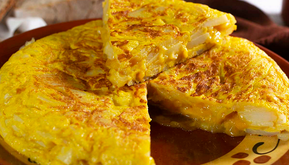

Tortilla de patatas
Ingredientes
- 4 patatas medianas
- 4 huevos
- 1 cebolla (opcional)
- Aceite de oliva
- Sal al gusto

Pasos
- Pelar y cortar las patatas en rodajas finas.
- Freír las patatas (y la cebolla) en aceite hasta que estén blandas.
- Batir los huevos y añadir sal.
- Mezclar patatas con huevos.
- Cocinar en sartén por ambos lados.
Descargar receta en PDF